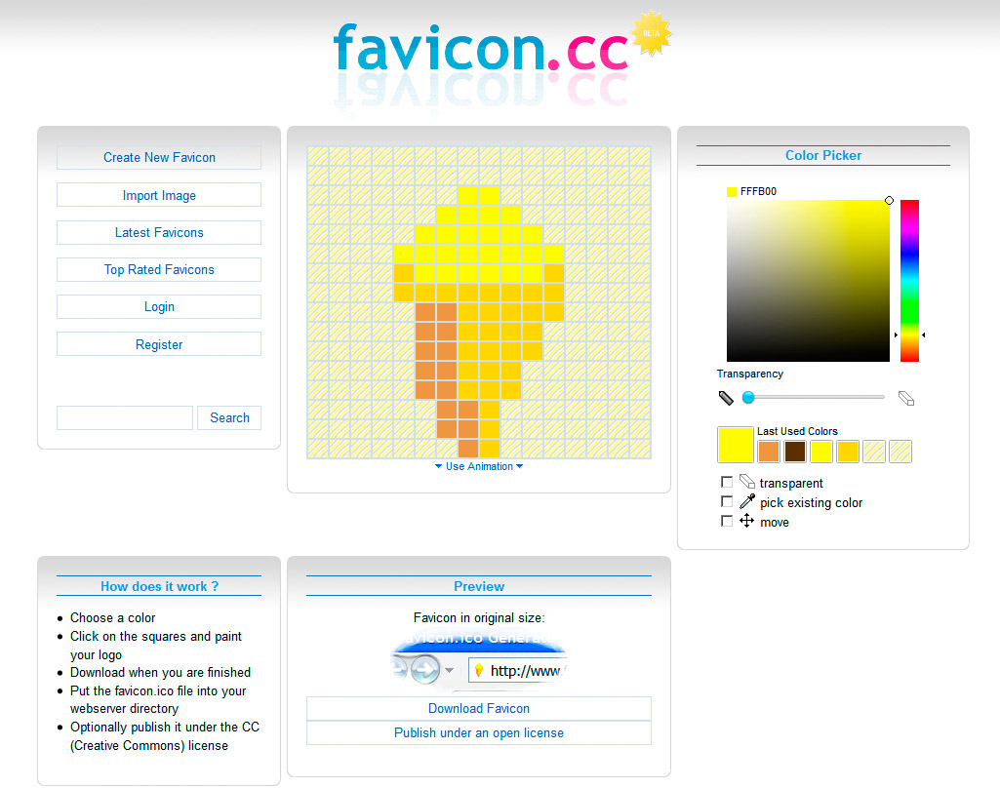
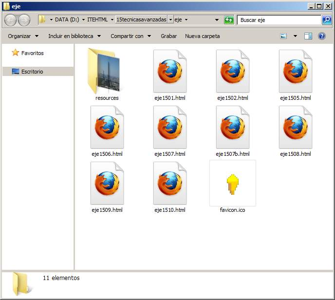

Mientras que todas las personas que trabajan en la creación de páginas web tienen clara la importancia de añadir un título a la página, para que sea fácil identificarla entre un grupo de pestañas o una lista de marcadores, no siempre se hace tanto hincapié en lo apropiado que resulta que nuestra web se pueda diferenciar de las demás con un icono.
Los favicons, como se suele llamar a este tipo de iconos, son los pequeños dibujos que aparecen en la barra de navegación del marcador, en las pestañas y en los marcadores. Son muy útiles para ayudar al usuario a distinguir nuestra web entre todas las demás.
La imagen suele ser un archivo en formato .ico, de 16x16 píxeles o más, aunque en algunos casos también se pueden emplear imágenes en formato .png. Finalmente el archivo se guardará en la carpeta principal de nuestro sitio web con el nombre favicon.ico
Para crearlos, podemos emplear cualquier editor de imágenes que pueda generar iconos o incluso algún editor de iconos online, como favicon.cc (http://www.favicon.cc), que se muestra en la figura.

Una vez diseñado el icono, haremos clic en el enlace Download Icon para guardarlo en nuestro ordenador. Se verá como el de la figura:

Pregunta Verdadero-Falso
Verdadero Falso
Actividad 7
Diseñaremos un icono para nuestro sitio web y lo descargaremos en la carpeta principal del sitio web. Cuando realicemos la transferencia a Internet y probemos las páginas, veremos si se muestra en los diferentes lugares donde suele hacerlo.